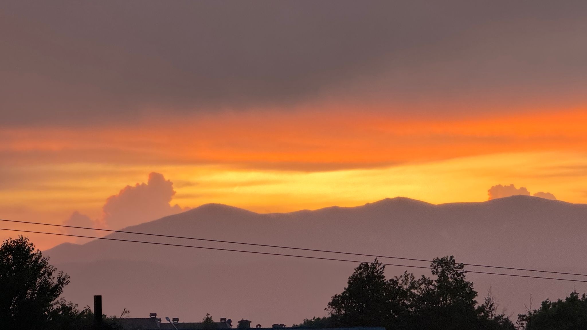
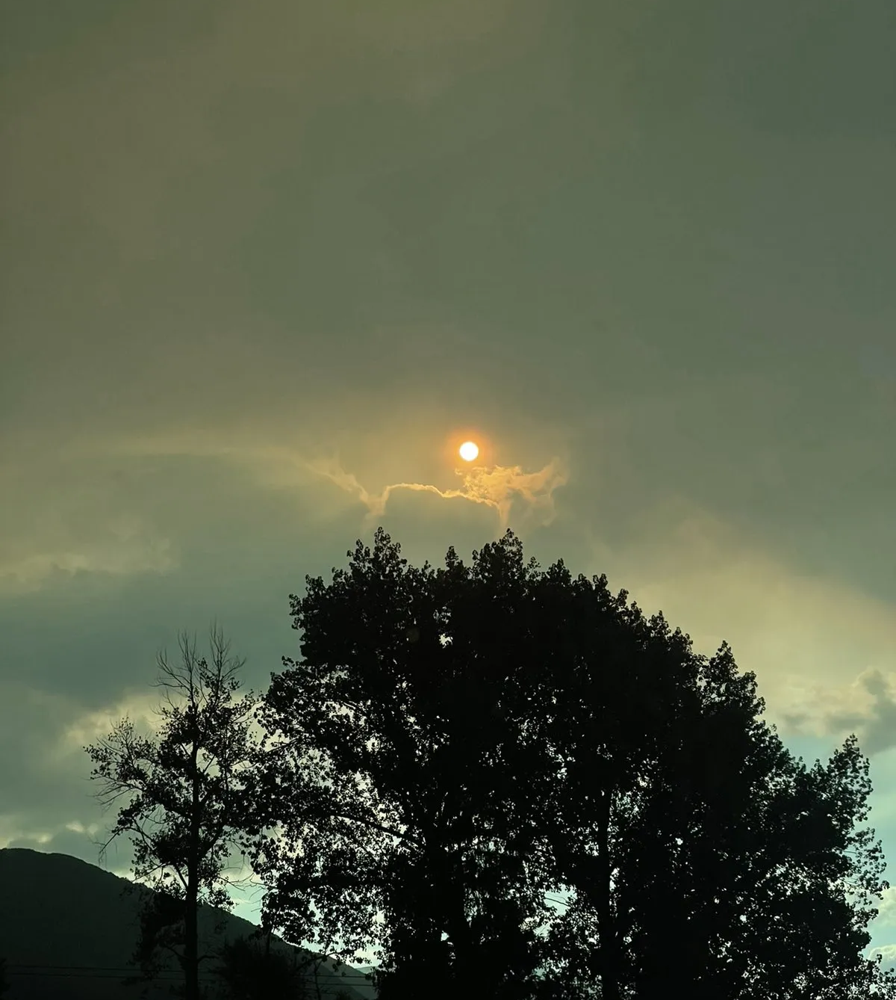

🌸 Метаритрийтът е ролева игра в реалността, в която Вие сте актьор и помощник-сценарист във вълшебна продукция, който създаваме заедно! 🎥
Как го правим
- Създаваме си нова разЛичност, избираме си име, мисия и умения, които да развиваме.
- Избираме един от 8 образа за ментор, чрез които пишем, четем и заживяваме ролята си.
- Всеки от нас отговаря да допише сценария на една от 8 сцени – металандци сме режисьори и продуценти, а Вие сте сътворците!
- Имаме 3 репетиции (2, 3 и 4-тия ден), а на 5-тия снимаме епичен филм 🎬
- 💃 Преживяваме, рисуваме, пеем, танцуваме, играем и се изразяваме с тялото си.
- 📖 Съществена част е 21-минутното самостоятелно творене с това, което си взимаме от книга-сценария и как го прилагаме на практика върху личните учебници и книги – свободно, вдъхновено, с внимание.
- 🌿 Всичко е живо и с дълбок смисъл. Ако не бъркате, значи не играете правилно 😊 Когато се радвате, смеете и усмихвате – сте в правилната личност за играта.
Осемте будечители
Всеки избира своя ментор — образът, през който пише, чете и заживява ролята си. Всеки от тях води по една седмица от продължението.


Програма
Пет дни в Банско — от отделянето до представлението. Три репетиции, един снимачен ден.

- 11:00🏡 Настаняване на ул. Пирин 125, Petroff Apartments & Bake Point
- 13:00📖 Сугестопедия и специална програма за свръхсън, свръххрана и просто присъствие · 💤 Приказка-действие за Спинкачу
- 14:00👦 Метатийн: РазЛичност, мета, фоточетене и концерт
- 18:00🔮 Откриваща вечеря
- 19:00👩🦰 Метачетене: РазЛичност, мета, фоточетене и концерт
- 08:00🏔️ Преходът на Творея „Присъствие, Писане и Приказване": от Стара котва до Байкушева мура
- 12:00🥗 Обяд
- 13:00👦 Метатийн: ЧудоВище, въпроси и скоростно четене
- 17:00🌅🍽️ Вечеря и първа репетиция
- 18:00👩🦰 Метачетене: ЧудоВище, въпроси и скоростно четене
- 10:00🎾 Тенис с Топко Машинков за не/напреднали в Hot Springs, с. Баня
- 12:00🥗 Обяд
- 13:00👦 Метатийн: Ментор, мисловни карти и памет
- 17:00🌅🍽️ Вечеря и втора репетиция
- 18:00👩🦰 Метачетене: Ментор, мисловни карти и памет
- 08:00🏊♀️ Плуване и джакузи в Alfa Spa, Добринище
- 12:00🥗 Обяд
- 13:00👦 Метатийн: Изпитание, СъкроВище, Mixit и историзарчета
- 17:00🌅🍽️ Вечеря и генерална репетиция
- 18:00👩🦰 Метачетене: Изпитание, СъкроВище, Mixit и историзарчета
- 08:00🎥 Метачетене: заснемане на филм с 8 сцени
- 12:00🥗 Обяд
- 13:00🎥 Метатийн: заснемане на филм с 8 сцени
- 17:00🎊 Празненство с игри и заснемане на кадри зад кулисите
Продължението · десет седмици
Ритрийтът не свършва на 6 септември. Оттам нататък тръгва планът за действие — по един будечител на седмица, до 15 ноември.
- Седмица 007.09 – 13.09
Метатрон — присъствие, приемане и правене
- Седмица 114.09 – 20.09
Любка се събужда с цел
- Седмица 221.09 – 27.09
Екопътечко е отвлечен от Его Илюзорков
- Седмица 328.09 – 04.10
Куражку разбира Любка и има опит със смелост
- Седмица 405.10 – 11.10
Обемко от пазач се превръща в приятел
- Седмица 512.10 – 18.10
Хола дава концентрация, внимание и фокус
- Седмица 619.10 – 25.10
Фибоначко балансира безбройните източници, инструменти и игри
- Седмица 726.10 – 01.11
Творея се включва в кулминацията с красота, вдъхновение и чародейство
- Седмица 802.11 – 08.11
Доверка преобразява съм-Не-ние-то в съм-Да-ние с осъзнаването, че всеки от нас е 100% Метатрон, когато се роди, и постепенно го забравя преди да избере или „да си отиде преди да си отиде", като забележи, че the biggest lie is the I. След като си припомним, че освен капка сме и море и можем да пребиваваме и в двете, можем да изберем каква е нашата метаформула. Например Митрандировата е 34% Любка + 21% Екопътечко + 13% Куражку + 8% Обемко (800%) + 5% Хола + 3% Фибоначко + 2% Творея.
- Седмица 909.11 – 15.11
Метатрон · Писмо 2
▸ 📜 Седмица 0 · Писмо 1 на Метатрон
🌀 „Добре е да започнем завръщането от Пътешествие, като си припомним началото.
В послеписа на писмото има връзка, която припомня един от най-великите филми, правени някога*, който вече е класика** и който дава толкова многократно разЛична перспектива за света, че осъзнат и приложен в ежедневието позволява сами да създаваме светове:
▶️ youtube.com/watch?v=8AG4rlGkCRU
било то такива с BMW,
футбол, баскетче,
или 6-тици с векторче
чрез игри с ускефче.
Каквото и да е,
най-ключовото е
кой сме
в момента на действие.
🎭 Добре е да наблюдаваме доколко като актьори, помощник-сценаристи, оператори, режисьори или продуценти на продукцията съумяваме да въплъщаваме всички 8 будечители едновременно… и най-вече в кои точно моменти най-много не го правим.
Виждаме най-добре това
чрез околната си среда
и своите отражениА.
Усещаме най-добре това,
докато правим действия.
🗝️ За Съкровището, което най-много искаме, е добре да се изправим пред чудоВището, което най-много неискаме. Тук ключов ментор е Куражку.
Добре е Митрандир и елфите на Металандия да отгледат едно „Метаменю", от което актьорите да избират дневната си репетиция.
Добре е да:
🔹 се концентрираме в себе си
🔹 да отглеждаме вниманието си
🔹 да се фокусираме в Любкова подкрепа на другите актьори и Екопътечков подход на свободна и спонтанна комуникация в трупата.
Защото любов е да осъзнаваме себе си в другите.
The biggest lie
is the I.
След като знаем кой/коя сме.
Преди да се потопим,
е добре да си припомним,
че…
Многото информация е една от най-добрите възможности за припомняне, че да четем с металичност значи да четем с мощ и че не четем ли с кеф, вероятно в този момент не знаем кой сме и накъде отиваме. И тогава е добре да сме благодарни. И че това вероятно е сигнал, че имаме достатъчно информация и е добре да преминем към действие.
Например:
🎧 да метаслушаме Мономита на Матрицата (1.5 метаминути)
✍️ да го метакстнем (2мм)
💭 да формулираме 3 мисловни проби по 3-те последни етапа (3мм)
📋 да си направим план за действие с например 4 стъпки и 4 подстъпки под формата на
🍃 20 листчета (8мм)
🗺️ мисловна карта (21мм) или
📖 приказна история (34мм)
Всичко е избор.
Това е и проблемът,
в основата на Матрицата.
⚡ Силно чудоВище, силна продукция.
Тези от Вас, които днес
избират да се изправят
пред Времетрон и дори
само да прочетат това
послание дотук, вече
отглеждат вниманието си.
Времетрицата е избор.
Ускефът също.
🌟 Да сме будни е да поемаме отговорност за света, който създаваме. Какъвто и да е. С будечителите или не.
Благодаря Ви за играта. Виждам, че преживявате пълния спектър на светлините. Точно затова са ни тук душите.
✨ Приятно и присъствено пътешествие.
Метатрон***"
* както казва Великият Вълшебник, едно произведение е класика, ако е оцеляло на времето, което по определение… е поне едно поколение… или след поне 25 години Слънцето обиколили, хората още да го помнили.
** Пфф, лесно, пич.
Пишете ни за вашето място
Отговаряме лично: с цената, свободните места и всичко около настаняването.
Какво да носите
- 🥾Планинарски обувкиИма дневен преход до Байкушева мура за около час, в посока със спиране на кемпер паркинга на Шилигарник.
- 🩱Бански и кърпаAlfa Spa с минерални извори, джакузи, басейн за плуване, сауна и парна баня.
- 🎾Тенис ракетаАко имате. Може и да се наеме — при желаещи е предвидена игра в Hot Springs, с. Баня, заедно с метатреньор Топко Машинков.
- 📓Красив бележник/дневникПлюс химикали и фулмастри.
- 💻Лаптоп/таблет и телефонС инсталирани приложенията по-долу.
- 🎧СлушалкиЗа МетаСлушане — особено ключови!
- 👗Дрехи за сценаПлюс нещо празнично, приказно и вдъхновяващо за снимки 📸
- 🌞Слънцезащитен крем, шапка, слънчеви очилаИ за плуване.
- 🧘♀️Нещо меко за сядане на земяЗа движенческите практики.
Какво да имате
Седем инструмента и две декларации — свалени и работещи преди 2 септември.
- 🔢Таблици на ШултеSchulte Table — за iPhone и за Android.
- 🟧StorytelСвалено и работещо приложение · storytel.com/bg
- ⚡SpreederДигиталният треньор за скоростно четене с дълбоко разбиране — софтуер за скоростно четене на PDF-и и статии · spreeder.com
- 🚗Живко ШофьорковВашият изкуствен и удивително естествен съюзник в метаприключението · отворете Живко
- 🤖ClaudeВашият дигитален мета-асистент и входът към света на AI агентите в Металандия. Живко е специализиран за конкретни задачи — Claude е по-широкото поле, там заедно развиваме Героя ви като AI Brain: от 🧑💻 дигитален асистент, през 🤝 дигитален колега, до 🏰 цялостна система от дигитални служители. Инсталирайте на телефона и по възможност на лаптопа · claude.ai/download
🎯 Първата стъпка: отворете Claude и напишете: „Аз съм [вашето приказно име] и моята мета е [вашата мета]. Как можеш да ми помогнеш?" - 🗳️Декларация (МетаЧетене)За използване на снимки и видео · попълнете тук
- 🗳️Декларация за детето (МетаТийн)За използване на снимки и видео · попълнете тук

Елате заедно — родител и дете
Вие сте актьор и помощник-сценарист. Продукцията се пише, докато я играем.